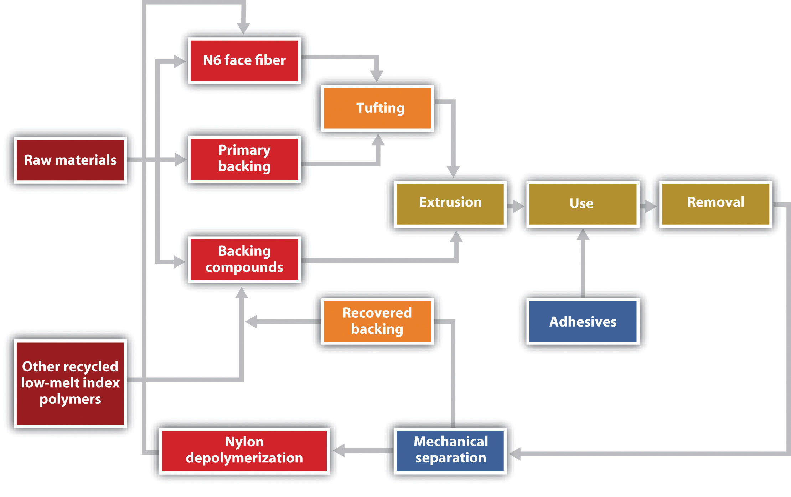

The carpet industry is the battlefield where the war for sustainability is being waged.
Architect William McDonough
The Shaw Industries case examines the production of a cradle-to-cradle carpet product in which a waste stream becomes a material input stream.This case was written by Alia Anderson and Karen O’Brien under the supervision of author Andrea Larson and developed under a cooperative effort by the Batten Institute, the American Chemical Society, and the Environmental Protection Agency’s Office of Pollution Prevention. Alia Anderson, Andrea Larson, and Karen O’Brien, Shaw Industries: Sustainable Business, Entrepreneurial Innovation, and Green Chemistry, UVA-ENT-0087 (Charlottesville: Darden Business Publishing, University of Virginia, 2006). Note can be accessed through the Darden Case Collection at https://store.darden.virginia.edu. Unless otherwise noted, quotations in this section refer to this case. In this situation we look at innovation challenges faced by a large global competitor.
In 2003 Shaw’s EcoWorx carpet tiles won a US Green Chemistry Institute’s Presidential Green Chemistry Challenge Award. The company had earned the award by combining the application of green chemistry and engineering principles (Table 7.5 "The Twelve Principles of Green Chemistry and Green Engineering") with a cradle-to-cradle designSee William McDonough and Michael Braungart, Cradle to Cradle: Remaking the Way We Make Things (New York: North Point Press, 2002) for extensive discussion of the C2C frame of reference. The field of industrial ecology provides a conceptual basis for this discussion; see Thomas E. Graedel and Braden R. Allenby, Industrial Ecology (Englewood Cliffs, NJ: Prentice Hall, 1995). (often called C2C) approach to create a closed-loop carpet tile system, a first in the industry. The product met the rising demand for “sustainable” innovations, helping to create a new market space in the late 1990s and 2000s as buyers became more cognizant of human health and ecosystem hazards associated with interior furnishings.
At the time, Steve Bradfield, Shaw’s contract division vice president for environmental development, commented on the process of creating the EcoWorx innovation, a process that by no means was over: “The 12 Principles and C2C provide a framework for development of EcoWorx that incorporates anticipatory design, resource conservation, and material safety.”Alia Anderson, Andrea Larson, and Karen O’Brien, Shaw Industries: Sustainable Business, Entrepreneurial Innovation, and Green Chemistry, UVA-ENT-0087 (Charlottesville: Darden Business Publishing, University of Virginia, 2006). The framework was part of a larger sustainability strategic effort that the contract division was leading at Shaw. The company also needed to explain the benefits of the EcoWorx system and educate the marketplace on the desirability of sustainable products as qualitatively, economically, and environmentally superior replacements for a product system that had been in place for thirty years. Change was difficult, especially when the gains from a substitute product were not well understood by the end user or the independent distributor. It was also difficult internally for a Shaw culture that didn’t fully comprehend the need to move beyond conservation.
Table 7.5 The Twelve Principles of Green Chemistry and Green Engineering
| Green Chemistry | |
| 1 | Prevention. It is better to prevent waste than to treat it or clean it up after it has been created.. |
| 2 | Atom Economy. Synthetic methods should be designed to maximize the incorporation of all materials used in the process into the final product. |
| 3 | Less Hazardous Chemical Syntheses. Wherever practicable, synthetic methods should be designed to use and generate substances that possess little or no toxicity to human health and the environment. |
| 4 | Designing Safer Chemicals. Chemical products should be designed to effect their desired function while minimizing their toxicity. |
| 5 | Safer Solvents and Auxiliaries. The use of auxiliary substances (e.g., solvents, separation agents, etc.) should be made unnecessary wherever possible and innocuous when used. |
| 6 | Design for Energy Efficiency. Energy requirements of chemical processes should be recognized for their environmental and economic impacts and should be minimized. If possible, synthetic methods should be conducted at ambient temperature and pressure. |
| 7 | Use of Renewable Feedstocks. A raw material or feedstock should be renewable rather than depleting whenever technically and economically practicable. |
| 8 | Reduce Derivatives. Unnecessary derivatization (use of blocking groups, protection/deprotection, temporary modification of physical/chemical processes) should be minimized or avoided, if possible, because such steps require additional reagents and can generate waste. |
| 9 | Catalysis. Catalytic reagents (as selective as possible) are superior to stoichiometric reagents. |
| 10 | Design for Degradation. Chemical products should be designed so that at the end of their function they break down into innocuous degradation products and do not persist in the environment. |
| 11 | Real-Time Analysis for Pollution Prevention. Analytical methodologies need to be further developed to allow for real-time, in-process monitoring and control prior to the formation of hazardous substances. |
| 12 | Inherently Safer Chemistry for Accident Prevention. Substances and the form of a substance used in a chemical process should be chosen to minimize the potential for chemical accidents, including releases, explosions, and fires. |
| Green Engineering | |
| 1 | Inherent Rather Than Circumstantial. Designers need to strive to ensure that all materials and energy inputs and outputs are as inherently nonhazardous as possible. |
| 2 | Prevention Instead of Treatment. It is better to prevent waste than to treat or clean up waste after it is formed. |
| 3 | Design for Separation. Separation and purification operations should be designed to minimize energy consumption and materials use. |
| 4 | Maximize Efficiency. Products, processes, and systems should be designed to maximize mass, energy, space, and time efficiency. |
| 5 | Output Pulled versus Input Pushed. Products, processes, and systems should be “output pulled” rather than “input pushed” through the use of energy and materials. |
| 6 | Conserve Complexity. Embedded entropy and complexity must be viewed as an investment when making design choices on recycling, reuse, or beneficial disposition. |
| 7 | Durability Rather Than Immortality. Targeted durability, not immortality, should be a design goal. |
| 8 | Meet Need, Minimize Excess. Design for unnecessary capacity or capability (e.g., “one size fits all”) solutions should be considered a design flaw. |
| 9 | Minimize Material Diversity. Material diversity in multicomponent products should be minimized to promote disassembly and value retention. |
| 10 | Integrate Material and Energy Flows. Design of products, processes, and systems must include integration and interconnectivity with available energy and materials flows. |
| 11 | Design for Commercial “Afterlife.” Products, processes, and systems should be designed for performance in a commercial “afterlife.” |
| 12 | Renewable Inputs. Material and energy inputs should be renewable rather than depleting. |
Source: P. T. Anastas and J. C. Warner, Green Chemistry: Theory and Practice (New York: Oxford University Press, 1998), 30; and P. T. Anastas and J. B. Zimmerman, “Design through the 12 Principles of Green Engineering,” Environmental Science and Technology 37, no. 5 (2003): 95–101. Used by permission.
World War II demanded wool, then the dominant carpet material, for military uniforms and blankets, providing an incentive for companies to research and create alternative fibers. This move toward alternatives was part of the general wartime drive that culminated in the introduction of synthetic materials (man-made) for many uses. After the war, manufacturers continued to develop various new natural and synthetic materials. By the 1960s, DuPont and Chemstrand’s man-made nylon and acrylic materials supplied most of the growing carpet industry’s textile fiber needs. An average American household could now afford machine-tufted synthetic carpets that replaced the expensive woven wool carpets of the past. By 2004 nylon accounted for 68 percent of the fibers used in carpet manufacturing, followed by 22 percent polypropylene and 9 percent polyester, with wool constituting less than 0.7 percent of the total.
By the 1970s, carpet flooring was the dominant aesthetic standard in a high proportion of industrialized countries for residential and commercial flooring markets. Historically, woven wool carpets (in which the carpet surface and backing were essentially one layer) gave way to tufted (fibers pulled through a matrix web) and needle-punched carpets bonded by a latex backing layer using an array of synthetic face fibers and backing materials. Carpet tiles, the fastest growing segment of the commercial carpeting industry, were expected to steadily replace much of the rolled broadloom carpet used historically in offices and other commercial locations. Regardless of design, all carpeting had traditionally been a complex matrix of dissimilar materials constructed without any thought of disassembly for recycling.It was not until 1994 that the industry began to take a more serious look at sustainability. One early adopter was the carpet tile innovator Interface Inc., which took steps to integrate sustainability throughout the company from top to bottom, reducing scrap waste, identifying operational inefficiencies, lowering energy use through solar and other innovations, and introducing a carpet leasing program through which it collected and recycled end-of-use carpet. Independently, however, other carpet producers began developing their own programs and initiatives, programs that some would contend exceeded the solutions Interface devised.
Shaw Industries, Mohawk Industries, and Beaulieu of America were the three largest carpet producers in 2004. Interface was the largest carpet tile manufacturer. Invista, a fiber spin-off of DuPont, and Solutia were the sole US producers of Nylon 6.6, a type suitable for carpet. Honeywell and vertically integrated carpet giant Shaw Industries were the major producers of Nylon 6 for carpet use. Price competition, economic downturn, and overcapacity had taken a heavy toll on American fiber and carpet companies. Unlike the broader textile industry, the nylon fiber and carpet producers did not see an influx of low-cost imports due to high transportation costs, relatively low labor costs associated with US fiber and carpet production, and the difficulties in finding viable US distribution channels for imports. The industry was consolidating and companies vertically integrated, formed alliances, or organized around market niches as lower carpet and floor covering sales tracked personal income insecurity and general economic turbulence. The first few years of the twenty-first century witnessed the loss of more than 90,000 US textile jobs and 150 plant closings. The carpets and rugs sector experienced sluggish growth. Growth rebounded by 2005, but competition was fierce and buyers would not tolerate higher prices or lower product performance.
In 2006, Shaw Industries of Dalton, Georgia, was the world’s largest carpet manufacturer, selling in Canada, Mexico, and the United States and exporting worldwide. The company’s historic carpet brand names, including Cabin Crafts, Queen Carpet, Salem, Philadelphia Carpets, and ShawMark, were de-emphasized relative to the consolidated Shaw brand. Shaw sold residential products to large and small retailers and to the much smaller distributor channel. Shaw offered commercial products primarily to commercial dealers and contractors, including its own Spectra commercial contracting locations, through Shaw Contract, Patcraft, and Designweave. The company also sold laminate, ceramic tile, and hardwood flooring through its Shaw Hard Surfaces division, and rugs through the Shaw Living division. Shaw Industries was publicly traded on the New York Stock Exchange (NYSE) until 2000, when it was purchased by Warren Buffet’s Berkshire Hathaway Inc. Shaw’s stock had been one of the best-performing stocks on the NYSE in the 1980s, but Wall Street’s dot-com focus of the 1990s depressed the stock price of Shaw and other manufacturers. The Berkshire buyout took the Wall Street factor out of Shaw’s management strategy, and 2001 through 2006 were record earnings years for the company.
Between 1985 and 2006, Shaw Industries made a string of acquisitions, including other large carpet makers, fiber-dyeing facilities, and fiber extrusion and yarn mills, moving steadily toward broad vertical integration of inputs and processes. The firm’s expensive forays into retail stores ended, and Shaw concentrated on shifting its outside purchases of fiber to internal fiber production. Shaw polymerized, extruded, spun, twisted, and heat-set its own yarn and tufted, dyed, and finished the carpet. Several key acquisitions included the following:
For Shaw, the obvious place to start thinking about product redesign was at the top of the carpet hierarchy: carpet tile. Its high price in comparison with broadloom carpets, its thermoplastic polyvinyl chloride (PVC) plastisol backing, and its relative ease of recovery from commercial buildings where large volumes of product could be found made it the best hope for early success. That may have been the first and last point of agreement among fiber and carpet manufacturers as sustainability began to take on widely differing meanings. Given that lack of definition and standard measures of sustainability, marketing literature could be confusing for specifiers and end users looking to compare the environmental impacts of competitive carpet tiles.
Carpet tile as a product category bridged most commercial market segments (e.g., offices, hospitals, and universities). On the market for more than thirty years, it was introduced originally as a carpet innovation that enabled low-cost replacement of stained or damaged tiles, rotation of tiles in zones of high wear, and easy access to utility wiring beneath floors. Carpet tile’s higher cost, high mass and embodied energy, more stringent backing adhesion performance specifications compared with broadloom, and double-digit market growth rate made it a logical focus for exploring alternative tile system designs.
Carpet tile was composed of two main elements, the face fiber and the backing. The face was made from yarn made of either Nylon 6 or Nylon 6.6 fiber, the only viable nylons in carpet use. US carpet tile was traditionally made with PVC plastisol backing systems, which provided the tile’s mechanical properties and its dimensional stability. PVC was under suspicion, however, due to the potential of the plasticizer to migrate from the material, potentially causing health problems and product failures. The vinyl chloride monomer in PVC was also a source of health concern for many. Most carpet tiles were made with a thin layer of fiberglass in the PVC backing to provide dimensional stability. These tiles ranged from eighteen inches to thirty-six inches square and required high dimensional stability to lay flat on the floor.
Backing provided functions that were subject to engineering specifications, such as compatibility with floor adhesives, dimensional stability, securing the face fibers in place, and more. Selecting backing materials and getting the chemistry and physical attributes right for the system’s performance took time and resources, and added cost. Since the mid-1980s, the backing problems associated with PVC had led several companies, including Milliken, to seek PVC-alternative backings. In 1997, Shaw asked the Dow Chemical Company to provide new metallocene polyolefin polymers to meet Shaw’s performance specifications for a thermoplastic extruded carpet tile backing. Shaw added a proprietary compounding process to complete the sustainable material design. Seeking every way possible to reduce materials use and remove hazardous inputs, yet maintain or improve product performance, Shaw made the following changes:
Although Shaw had yet not begun to get carpet tiles back for recycling because of the minimum ten years of useful life, models assessing comparative costs of the conventional feedstock versus the new system indicated the recycled components would be less costly to process than virgin materials.
Figure 7.15 EcoWorx Carpet Tile Operations and Flows Diagram
Source: Alia Anderson, Andrea Larson, and Karen O’Brien, Shaw Industries: Sustainable Business, Entrepreneurial Innovation, and Green Chemistry, UVA-ENT-0087 (Charlottesville: Darden Business Publishing, University of Virginia, 2006).
The EcoWorx system developed by Shaw Industries offered a way to analyze and refine the C2C design of a carpet tile system without regard to technology constraints of the past. The Twelve Principles of Green Chemistry and Green Engineering and C2C provided a detailed framework in which to evaluate a new technology for engineering a successful carpet tile production, use, and recovery system. The EcoWorx system also utilized Shaw’s EcoSolution Q Nylon 6 premium-branded fiber system, which was designed to use recycled Nylon 6 and in 2006 embodied 25 percent postindustrial recycled content in its makeup from blending and processing Nylon 6 fiber waste.
The EcoSolution Q Nylon 6 branded fiber system could be recycled as a technical nutrient through a reciprocal recovery agreement with Honeywell’s Arnprior depolymerization facility in Canada without sacrificing performance or quality or increasing cost. But Shaw’s original intention to take the Nylon 6 waste stream through the Evergreen Nylon Recycling Facility at Augusta, Georgia, was made possible with Shaw’s purchase of the Honeywell/DSM joint venture. The depolymerization process was restarted in February 2007. That allowed Shaw’s carpet tile products to make a cradle-to-cradle return to manufacturing, with nylon fiber from tile made into more nylon fiber and backing returned to backing.
Shaw’s objective was to create technology for an infinitely recyclable carpet tile, one that could be entirely recycled with no loss in quality from one life cycle to the next. The notion of closed-cycle carpet tiles forced the complex issue of compatibility between face fiber (the soft side on which people walk) and the backing. As for which face fiber to use, current technology allowed only Nylon 6 fiber to be reprocessed. The Nylon 6 material retained its flexibility and structure through multiple reprocessing cycles by disassembling the Nylon 6 molecules with heat and pressure to yield the monomer building block, caprolactam. This recycled monomer was identical in chemical makeup to virgin caprolactam. In contrast, Nylon 6.6 could not be economically depolymerized due to its molecular structure. Nylon 6.6 incorporated two monomer building blocks resulting in greater disassembly cost and complexity.
In 1997 Bradfield and Shaw chemist Von Moody discussed a particular method of processing polyolefin resins that produced flexible, recyclable polymers. Polyolefins were an intriguing material for Shaw to explore as carpet backing, given the company’s purchase of Amoco polypropylene (a type of polyolefin) extrusion facilities. After nearly $1 million invested in research and development and a pilot backing line, the tests suggested that polyolefins could be melted and separated from Nylon 6 and therefore successfully recycled into like-new materials. Shaw created the pilot backing line with the intention of “fast-prototyping” the polyolefin backing by modeling the performance attributes of Shaw’s PVC backings. This prototyping risk might easily have failed but was instead the start of EcoWorx.
Shaw first introduced EcoWorx commercially in 1999. As a polyolefin-backed carpet tile, EcoWorx offered an alternative to the industry standard PVC backing at comparable cost, 40 percent less weight, and equal or improved effectiveness across all performance categories. EcoWorx earned the 1999 Best of Neocon Gold Award at the prestigious and largest annual interior furnishings and systems show in the United States. In 2002 the company’s EcoWorx tile called “Dressed to Kill” won the carpet tile Neocon Gold Award for design, effectively mainstreaming the new material. By 2002, Shaw had announced EcoWorx as the standard backing for all its new carpet tile introductions. Indeed, customers preferred the new product; consequently, by 2004 EcoWorx accounted for 80 percent of carpet tile sold by Shaw—faster growth than anticipated. At the end of 2004, Shaw left PVC in favor of the EcoWorx backing, accomplishing a complete change in backing technology in a brief four years.
EcoWorx as a system of materials and processes proved significantly more efficient. The backing was dramatically lighter than that of PVC-backed tiles. The EcoWorx process, which used electric thermoplastic extrusion rather than a traditional gas-fired or forced-air oven, was more energy-efficient. The process combined an ethylene polymer base resin (developed by Dow Chemical) with high-density polyethylene (HDPE), fly ash for bulk (instead of the virgin calcium carbonate traditionally used), oil that improved the product’s compatibility with the floor glue, antimicrobial properties, and black pigment in a proven nontoxic construction. This compound was applied to the carpet backs using a low-odor adhesive to maintain high indoor air quality standards. The backing material was combined with a nonwoven fiberglass mat for stability. Shaw’s agreement with customers at the point of sale was that Shaw would pay to have the carpet returned to it. Back in its plant Shaw would shred the carpet and separate the backing stream from the fiber stream. The “infinitely recyclable” duo of Shaw’s Nylon 6 fibers (marketed as EcoSolution Q) and EcoWorx backing received acclaim throughout the industry. Shaw’s competitive cost and exceptional performance compared with traditional products allowed it to step beyond the limits of the “green” niche market. Especially important, Shaw’s research showed that the cost of collection, transportation, elutriation,Elutriation refers to the process of shredding returned tiles and their purification by washing, straining, or separating by weight. and return to the respective nylon and EcoWorx manufacturing processes was less than the cost of using virgin raw materials.Steve Bradshaw (Shaw Industries), in discussion with author, March 2005. Shaw tripled the production capacity in 2000, and by the end of 2002, shipments of EcoWorx tiles exceeded those of PVC-backed styles.Steve Bradshaw (Shaw Industries), in discussion with author, March 2005. Shaw continued to expand its collection and recycling capacity in preparation for 2009, when the first round of EcoWorx carpet that was released in 1999 would reach the end of its first life cycle. It appeared that Shaw would be the first to close the industrial loop in the carpet tile industry.
Recycling carpet was a complex endeavor because carpet was composed of a complex composite of face fibers, glues, fillers, stabilizers, and backings, each with varying capacity to be melted and reused. Approximately 70 percent of the face fiber used in carpets was made of either Nylon 6 or Nylon 6.6, with each of these two types comprising an equal share of the nylon carpet fiber market. Neither fiber had the production capacity to serve the entire carpet industry.
Both nylons made excellent carpet. Although recovered Nylon 6.6 could be recycled into other materials (not carpeting), such as car parts and highway guard rails, the economic incentives for companies were low, and many people argued that “downcycling” in this way only postponed discarding the product in a landfill by one life cycle.
The development of technology for recycling Nylon 6 fibers into new carpet face fiber represented a major shift. Honeywell International Inc., a major supplier of the Nylon 6 fiber used by carpet manufacturers, was so confident about the market potential for recycled Nylon 6 fiber that it developed the $80 million Evergreen Nylon Recycling Facility in Augusta, Georgia, in 1999. Unfortunately, the cost of recycled caprolactam was not competitive with virgin caprolactam (used in making Nylon 6) at that point in time, and the plant closed in 2001.Katherine Salant, “Carpet Industry Makes Strides in Reducing Footprint, but Path Includes Several Obstacles,” Washington Post, January 31, 2004.
The Honeywell Evergreen Nylon 6 depolymerization unit was restarted in early 2007, but it was Shaw’s purchase of Honeywell’s carpet fiber facilities in 2006 that ultimately made that happen. After purchasing the Honeywell interest in Evergreen, negotiations for the DSM portion of the joint venture gave Shaw 100 percent ownership. In February 2007, Shaw reopened the Evergreen facility to produce caprolactam for Shaw Nylon 6 polymerization operations. In 2007, Shaw owned and operated the only commercially scaled postconsumer Nylon 6 monomer recycling facility in the world. Invista and Solutia, the only producers of Nylon 6.6, had a long history of technical development and response to competitive challenges. Promising work was under way in dissolution technologies that would allow postconsumer Nylon 6.6 to be recycled in an economical manner, restoring the uneasy balance between the two nylon types on the environmental front. Nylon 6.6 was here to stay, and industry observers said large-scale recycling of Nylon 6.6 was a matter of when, not if, the process was perfected. However, in 2007 no hint of plans for a Nylon 6.6 recycling facility had yet surfaced.
After World War II, the design and manufacture of products from man-made and naturally occurring chemicals provided a wide range of inexpensive, convenient, and dependable consumer goods on which an increasing number of people relied worldwide. Behind the valuable medicines, plastics, fuels, fertilizers, and fabrics lay new chemicals and processes that were not time tested but appeared to have superior performance relative to prewar materials. Most of the polymer building blocks were developed by chemists between 1950 and 2000 as a result of and a driver of the post–World War II economic boom.
By the 1990s the growing rate of carpet usage had led to serious concern over waste disposal; 95 percent of carpet ended up in landfills. In 2001, this waste stream was reported at 4.6 billion pounds the United States.Carpet America Recovery Effort, “Memorandum of Understanding for Carpet Stewardship (MOU),” accessed January 31, 2011, http://www.carpetrecovery.org/mou.php#goals. Growing water quality, cost, and land-use issues related to carpet disposal generated significant pressure from government and commercial buyers for the development of carpet recycling technology. In January 2002, carpet and fiber manufacturers signed the National Carpet Recycling Agreement together with the Carpet and Rug Institute (the industry trade association), state governments, nongovernmental organizations (NGOs), and the EPA. This voluntary agreement established a ten-year schedule to increase the levels of recycling and reuse of postconsumer carpet and reduce the amount of waste carpet going to landfills. The agreement set a national goal of diverting 40 percent of end-of-life carpet from landfill disposal by 2012.
One result of the national agreement was the 2002 creation of the Carpet America Recovery Effort, a partnership of industry, government, and NGOs designed to enhance the collection infrastructure for postconsumer carpet and report on progress in the carpet industry toward meeting the national goals defined in the National Carpet Recycling Agreement.Carpet America Recovery Effort, “Memorandum of Understanding for Carpet Stewardship (MOU),” accessed January 31, 2011, http://www.carpetrecovery.org/mou.php#goals. In the late 1990s Presidential Executive Order 13101, a purchasing guide, was fueling demand for “environmentally preferable products” by government and by purchasers that received federal funds. This program introduced the idea of multiple-environmental-impact purchasing evaluations as a replacement for the outdated practice of relying solely on recycled content as the measure of product sustainability.
However, the problems with carpeting would not be addressed so easily. As monitoring equipment capabilities advanced between 1990 and 2005, new health and ecological impact hazards associated with certain widely used chemicals were identified. “Environment” was a topic that historically related to on-site toxins and compliance activity, with “health” referring to effects that surfaced after the product left the company; both concerns were relegated to the environment, health, and safety office inside a corporation. But scientists, design engineers, and increasingly middle and senior management needed to incorporate a broader understanding of such concerns into the ways products were designed and made. This was particularly true in the construction and home furnishing sectors, where greater use of chemicals combined with less than adequate ventilation and more architecturally tight building designs to create health problems.
As far back as 1987, the US Consumer Product Safety Commission, the federal agency that monitors commercial product safety, received more than 130 complaints about flu and allergy symptoms and eye and throat irritations that began directly following the installation of new carpet. Although that was a small number, this data often represented the tip of a health problem iceberg. Over the next few years, air quality research led to the well-publicized concept of “sick building syndrome”—a condition in which occupants experienced acute illness and discomfort linked to poor indoor air quality. Carpets were not the only culprits. Wall materials and wall coverings (paint and wallpaper) as well as various hardwood floor treatments also were implicated. To the industry’s dismay, the EPA listed “chemical contaminants from indoor sources, including adhesives [and] carpeting…that may emit volatile organic compounds (VOCs)” as contributors to sick building syndrome.American Lung Association, American Medical Association, US Consumer Product Safety Commission, and US Environmental Protection Agency, Indoor Air Pollution: An Introduction for Health Professionals, accessed January 26, 2011, http://www.epa.gov/iaq/pdfs/indoor_air_pollution.pdf. It was not the building that was sick. At the time, the US Centers for Disease Control reported “body burdens” of chemicals in people’s bloodstreams from unidentified sources. Under increasing study were babies’ body burdens—the pollutants in infants’ blood and organ tissues—later known to result from placental cycling of blood, oxygen, and nutrients between mother and child.
Simultaneously, concern was building throughout the 1990s concerning PVC plastic that contained phthalate plasticizers. Phthalates were added to PVC during processing to make the resulting plastic soft and flexible; however, researchers discovered that phthalate molecules did not structurally bind to PVC, which therefore leached out of products. Though there was debate about the level of harm that leaching caused humans, reputable studies linked phthalates to reproductive and endocrine disorders in animals. Environmental health science reports and concerns over PVC plasticizers grew steadily between 1995 and 2005. California planned to add di-2-ethylhexyl phthalate (DEHP) to a list of chemicals known to cause birth defects or reproductive harm. The list, contained in Proposition 65, followed on the heels of warnings from the Food and Drug Administration, National Toxicology Program, and Health Canada that DEHP may cause birth defects and other reproductive harm. Furthermore, incineration of PVC released highly toxic organochlorine by-products, including microscopic dioxins, into the atmosphere, where they moved with regional weather patterns, returning to the lower atmosphere and eventually to earth through the hydrologic cycle. Breathing in dioxins had been linked to cancer, growth disruptions, and developmental problems in humans for many years from laboratory and production worker data. By July 2005, links between commonly used chemicals, even in very low doses, and human health deficiencies were being discussed on the front page of the Wall Street Journal. Despite the evidence against PVC, the California Department of General Services (DGS) approved PVC carpet tile in its 2006 California Gold Carpet Standard and instituted a 10 percent postconsumer recycled content requirement for all state carpet purchases, which virtually guaranteed increased purchases of PVC carpets. The DGS also refused to allow exemptions for non-PVC materials that had not been on the market long enough to be recovering adequate quantities of postconsumer material.
Many carpet manufacturers focused their early environmental efforts on reducing trim waste from industrial and installation processes (eco-efficiency). Trim waste cost the industry an estimated $25 million per year in unused carpet production and disposal fees, but this represented only 2 percent of total carpet production and, though important, made a relatively small impact on the end-of-life waste volume issue. As efficiency strategies became more systems oriented, a competitive market grew for technology to recover and recycle postconsumer carpet.
Indeed, for many years real solutions to the problems of end-of-life recycling of carpet were lost in the clutter of the first and easiest step in environmental stewardship—reduction of materials, water, energy usage, and waste. Capabilities were developed—typically under a company’s environment, health, and safety office—that essentially absorbed a quality and cost-cutting issue under the compliance function. With respect to carpeting materials, efforts were concentrated on the 2 percent of all carpet materials that remained as scrap in the manufacturing plants. More than 98 percent of all materials entering the carpet manufacturing stream were shipped to the customer as finished carpet. Once used and in need of replacement, this postconsumer carpet traditionally ended its life in landfills.
Other environmental efforts in the carpet industry focused on converting or recycling products such as polyethylene terephthalate (PET) plastic bottles (waste streams from other industries) into carpet fiber, incorporating the recovered materials into new products. This effort was encouraged by the Comprehensive Procurement Guideline (CPG) program (RCRA 6002, 1998), which required federal agencies to purchase items containing recovered and reused postconsumer materials. Of the forty-nine items listed in the program, PET carpet face fiber, carpet backing, and carpet cushioning were included.US Environmental Protection Agency, “Indoor Air Quality: Indoor Air Facts No. 4 (Revised) Sick Building Syndrome,” last updated September 30, 2010, accessed January 26, 2011, http://www.epa.gov/iaq/pubs/sbs.html. EPA provided lists that gave priority to products containing a high percentage of postconsumer material. Shaw EcoWorx was not included on the vendor list because while it was an innovative breakthrough that would achieve a 100 percent recovery rate, it had yet to complete its initial life cycle. The CPG proposed designation of nylon carpets (fiber and backing). However, due to the lack of postconsumer nylon availability in the market, the CPG designation would boost federal purchases of PVC carpets at a time when non-PVC carpets were increasing their market share but had not yet had time to see postconsumer material returned and to therefore achieve CPG compliance.
In 2006, recycled plastic remained more costly than virgin fibers, which limited the carpet industry’s enthusiasm for this measure. But plastic came from oil, a feedstock source increasingly subject to price volatility and unstable supply. Crude oil prices rose from about $25 per barrel in the 1990s to more than $60 in 2006. In the face of this price uncertainty and consistent high oil prices, Shaw concentrated on and eventually achieved systems economics that resulted in the recovered EcoWorx materials coming back as feedstock under the price of virgin materials. Standards such as the CPG may have served as a disincentive to material innovation if first-generation products such as EcoWorx had to have significant postconsumer recycled content to qualify. The irony was that EcoWorx had won an EPA-sponsored Presidential Green Chemistry Challenge Award in 2003 in the safer chemicals category, yet an EPA nylon carpet CPG designation would effectively prevent federal agencies from purchasing it. Shaw and others devoted significant resources over a four-year period to persuade EPA to abandon the nylon carpet CPG designation in favor of a multiple impact assessment of carpet.
Steve Bradfield was an early supporter of the US Green Building Council’s (USGBC) Leadership in Energy and Environmental Design (LEED) program, which established standards for environmentally preferred building materials and construction. Bradfield had participated for several years in the architecture and building industries’ movement to reduce and eliminate problematic materials that were increasingly linked with respiratory, allergy, and other human health problems. In 2003, Bradfield talked about Shaw’s sustainability policy. (The following year, he would testify before Congress in support of green legislation.) Shaw’s policy, Bradfield explained, articulated the firm’s corporate strategy to move steadily toward a cradle-to-cradle and a solar-powered future.
House Committee on Science Hearing, March 17, 2004
Steve Bradfield, Vice President for Environmental Development, Shaw Industries, Representing the Carpet and Rug Institute
(Excerpt)
Imagine a future when no carpet goes to a landfill, but is separated into its constituent parts at the end of its useful life to be sustainably recycled over and over again. This is happening today with some carpet types, but not enough as yet to significantly divert the 4.5 billion pounds of carpet that went to our nation’s landfills in 2003. Green chemistry can help to develop beneficial uses for the materials used to make carpet today and assure that steady progress is made toward sustainable materials that can go directly back into carpet production in the future.
Perhaps the most compelling reason to support green chemistry and the growth of sustainable materials and processes in carpet is jobs. Annual carpet production and consumption in the U.S. of $12 billion is equal to the rest of world carpet production and consumption combined. Carpet jobs will stay in the U.S. if we can develop ways to keep postconsumer carpet materials in sustainable closed-loop recycling systems that reduce the need for virgin raw materials and lower the energy embodied in successive generations of carpet products. Why would any U.S. company choose to manufacture overseas if their valuable raw materials are being collected and recycled at lower cost, with no sacrifice of performance, from American homes and businesses in close proximity to the means of production?
The economic benefits of green chemistry are quantifiable in each of the example given herein. As an industry, green chemistry has helped to reduce the water required for dyeing a square yard of carpet from 14.9 gallons in 1995 to 8.9 gallons in 2002. The energy required from thermal fuels to make a square yard of carpet has fallen from 14.5 million BTUs in 1995 to
10.3 million BTUs in 2002. Today the carpet industry has the same level of CO2 emissions it reported in 1990 yet it produces 40% more carpet.
Shaw’s experience with green chemistry is representative of the developments that are ongoing in the industry. By way of illustration, Shaw’s polyolefin carpet tile backing has fueled an average annual growth rate in carpet tile of almost 15% per year over the last four years. This growth provides 440 jobs in our Cartersville, Georgia, carpet tile facility and generates more than $100 million in revenue. It has reduced packaging costs by 70%, shipping costs by 20% and resulted in more than $100,000 in annual postindustrial scrap recovery. The recovery of the postconsumer carpet tile will result in even more second-generation savings. Other manufacturers can share economic success stories that are just as compelling.
In 1950 the carpet industry shipped 97 million square yards of carpet. In 2001 we shipped 1.879 billion square yards. Between 1965 and 2001 carpet increased in price by 90.4% while the same time period saw an automobile increase 180.4% and a combined total of all commodities increased 315.4%. More than 80% of the U.S. carpet market is supplied by mills located within a 65-mile radius of Dalton, Georgia. Carpet is important to the economy of Georgia and the United States. Green chemistry is an important tool to facilitate its continued growth.
In conclusion, we support the adoption of the Green Chemistry Research and Development Act of 2004 with the suggestions that Congress encourage a cooperative effort among government, academia, and business; that Congress seek additional incentives to reward those companies that commercialize green chemistry developments; that obstacles to the green chemistry discovery process be removed from current federal environmental programs; and that adoption of green chemistry in the broader context of sustainable product development should become a primary instrument of pollution prevention policy in the United States with the additional goals of job creation and economic improvement.Testimony accessed March 7, 2011, http://www.gpo.gov/fdsys/pkg/CHRG-108hhrg92512/html/CHRG-108hhrg92512.htm.
In 2006 LEED requirements did not factor in EcoWorx’s recovery and reuse benefits in awarding points to companies looking to achieve higher LEED rankings. But the USGBC had begun a dialogue on how to incorporate multiple metrics, including cradle-to-cradle design points, into the 2007 version of LEED. At the same time, many corporations that were committed to sustainability practices, or at least wanted to gain positive publicity for their efforts, were setting LEED certification levels among their goals for their headquarters buildings.
Environmental pressure had been mounting for several years in the carpet industry. Said William McDonough, architect, environmentalist, and promoter of the cradle-to-cradle design approach with Michael Braungart, “The carpet industry is the battlefield where the war for sustainability is being waged.”Alia Anderson, Andrea Larson, and Karen O’Brien, Shaw Industries: Sustainable Business, Entrepreneurial Innovation, and Green Chemistry, UVA-ENT-0087 (Charlottesville: Darden Business Publishing, University of Virginia, 2006). Indeed, so many carpet companies seemed to be actively marketing carpet sustainability in comparison with other industries that the question of “Why carpet?” is often asked. With Presidential Executive Order 13101, the purchasing mandate, and others fueling the demand for “environmentally preferable products” in government, a new breed of environmentalist had appeared by the late 1990s, ready to constructively engage with industry but still offering conflicting views of what constituted sustainable design in the absence of consensus on a national standard.
The first LEED Green Building Rating System was completed in 2000 and grew quickly into an internationally recognized certification program for environmentally sensitive design. Recognizing that buildings account for 30 percent of raw materials use and 30 percent of waste output (136 million tons annually) in the United States,US Green Building Council, An Introduction to the US Green Building Council, accessed January 31, 2011, http://www.usgbc.org/Docs/About/usgbc_intro.ppt. the USGBC, an organization affiliated with the American Association of Architects, gathered representatives from all sectors of the building industry to develop this voluntary and consensus-based rating system. By adhering to an extensive point system with categories such as Indoor Environmental Quality, Materials and Resources, and Water Efficiency, both new buildings and interior renovations could become LEED certified at different levels of excellence (Basic, Silver, Gold, and Platinum). Carpet selection became an integral element of LEED certification through materials requirements such as “Recycled Content,” “Low-Emitting Materials–Flooring Systems,” and Low-Emitting Materials–Adhesives and Sealants.”See, for instance, US Green Building Council, “LEED 2009,” accessed January 31, 2011, http://www.usgbc.org//ShowFile.aspx?DocumentID=5719. But LEED offered few incentives for other important environmental impact reductions.
Between 2000 and 2004, the LEED Green Building Rating System gathered more than 3,500 member organizations and certified projects in 49 states and 11 countries.US Green Building Council, An Introduction to the US Green Building Council, accessed January 31, 2011, http://www.usgbc.org/Docs/About/usgbc_intro.ppt. LEED’s continued influence in the building industry was secured by policies in the US Department of the Interior, EPA, General Services Administration, Department of State, Air Force, Army, and Navy, mandating differing levels of LEED standards for future buildings. By 2005 California, Maine, Maryland, New Jersey, New York, Oregon, and many cities across the United States also had legislated LEED standards for construction and procurement at various levels, either through mandates on capital developments or tax credits to developers who met the requirements.US Green Building Council, LEED Initiatives in Government by Type, May 2007, accessed January 31, 2011, https://www.usgbc.org/ShowFile.aspx?DocumentID=1741.
Third-party organizations, both for profit and not for profit, were proliferating in 2005–6 in a bid to gather the critical mass necessary to be recognized as the certifier of choice for many different aspects of the environmental patchwork of metrics defining that elusive goal called sustainability. Even self-certification programs from various industry associations have attempted to build consensus. Recycled content seemed to be the path of least resistance, but life-cycle analysis, embodied energy studies, and variations on the complex theme of “closing the loop” proliferated and jockeyed for position in the new “industry” of environmental and health performance. Unfortunately, an inevitable “unintended consequence” of these efforts was confusion and controversy among stakeholders.
As Steve Bradfield reflected on challenges in the near future, he said he hoped the innovations required to implement the EcoWorx strategy would continue to draw on the extensive capabilities of Shaw and its partner firms. Certainly whatever transpired had to be consistent with Shaw’s Environmental Vision Statement. Questions went through his mind. Did the company fully anticipate the requirements of reverse logistics systems design? Had they identified the probable challenges and bottlenecks? Was the Shaw culture changing quickly enough to execute the strategy successfully? Would the company have sufficient capacity for the disassembly stage? The capacity of the elutriation system initially would allow Shaw to recycle 1.8 million square yards of carpet per year. This equipment enabled separation of the backing and fiber in a single pass and was expected to meet the anticipated future growth capacity requirement of the returned postconsumer material over the next five to ten years. But would the economics of the system meet the organization’s expectations?
Environmental sustainability is our destination and cradle-to-cradle is our path. Our entire corporation and all stakeholders will value and share this vision.
Through eco-effective technology we will continuously redesign our products, our processes, and our corporation.
We will take responsibility for all that we do and strive to return our products to technical nutrient cycles that virtually eliminate the concept of waste.
We will plan for generations, while accepting the urgency of the present. We are committed to the communities where we live and work. Our resources, health, and diversity will not be compromised.
We look forward to a solar-powered future utilizing the current solar income of the earth, anticipating declining solar costs and rising fossil fuel costs as technology and resource depletion accelerate.
We will lead our industry in developing and delivering profitable cradle-to-cradle solutions to our free-market economy. Economy, equity, and ecology will be continually optimized.
Honesty, integrity, and hard work remain our core values. We will continue to deliver unsurpassed safety, quality, design, performance, and value to our customers.Shaw Industries, “Shaw Industries Announces New Environmental Policy to Drive Manufacturing Processes,” press release, December 4, 2003, accessed March 7, 2011, http://www.shawcontractgroup.com/Contentpress_releases./pr_031204_Environmental.pdf.
In 2007, Bradfield knew that EcoWorx had become a major driver in the phenomenal growth of Shaw’s carpet tile business. In late 2006, the company had introduced EcoWorx broadloom, a twelve-foot roll version of the EcoWorx technology that brought cradle-to-cradle design to the staid broadloom business. Bradfield’s recent promotion to corporate director of environmental affairs for the $5.8 billion Shaw organization signaled the adoption of cradle-to-cradle goals across every division and functional area—a major achievement given the humble beginnings of what had started out as a commercial carpet initiative. A new Shaw environmental website, http://www.shawgreenedge.com, offered a single destination for anyone interested in the initiatives driving Shaw’s sustainability efforts.